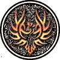

|

|
>> Содержание / Список кланов /
 Revivedagain Revivedagain
Рассвет неловко уронил свои капли на натруженные плечи, иссеченные глубокими шрамами, иссушенные лишениями и мучениями. Уронил, и те покатились по уставшей груди, груди побывавшей не в одном сражении, груди, которая вздымалась в боевом кличе, как за правое дело, так и за идеалы, чернее которых был только недостойный алмаза уголь. И сейчас она вздымалась, но уже не воинственно – скорее мирно, так, словно не было за плечами страшных видений, мучивших его уже долгое-долгое время. Он понимал, что это навсегда, что это не уйдет со временем, но все же в выцветших от вида пролитой крови глазах теплилось огниво надежды, что-то было там, где уже давно должно было умереть все человеческое.
Он поднял лицо к восходящему солнцу, которое несмело выглянуло из-за горизонта, осветив его могучую фигуру. Одинокую фигуру на краю утеса, у самой его кромки, там, где кажется уже потерялась разница между твердой, нерушимой скалой и нежной плотью пропасти. Взгляд устремился вниз, но там было даже меньше чем в молчаливом восходе…
Предаться сожалению, значит проиграть, а для него, прошедшего Рай и Ад, для него бившегося вилами и защищавшегося ангельскими крыльями, это было непростительно.
В той последней битве, из которой он чудом смог спастись, уже не было ничего, что можно было бы назвать воинской честью. В одной единой «каше» смешались тёмные, светлые и даже те, кто просто проходил рядом. Последнее, что он помнил – это летящий прямо в забрало шлема огромный молот. Дальше…темнота. Глубокий провальный сон овладел его разумом. И именно там он увидел это легендарное существо. Феникс! На его глазах птица взлетела вверх в небо и, сделав круг, начала пылать огнём. Через пару мгновений рядом с могучим воином на земле лежала лишь горстка пепла. Если бы сам не почувствовал воин никогда бы не поверил, что из его глаз может течь эта солёная жидкость, которую чувственные люди называют слезами… Лишь две капли коснулись пепла, как вдруг из него вылетел птенец Феникса и стремительно полетел к солнцу, вырастая на глазах! а через каких то триста метров в небе вновь парила гордая птица!
Открыв глаза, он увидел, что лежит на утёсе, прям у края бездны. Он понял, что сон этот был не просто так. Этим Фениксом был он…в той битве он умер, но небеса его вернули на землю, переродив и дав ещё один шанс. Но шанс на что? Сил к сожалению уже не оставалось никаких….Гордость воина все еще толкала его вперед. Но вперед, это куда? Неужели в эту бездонную пропасть? Неужели навстречу смерти? Или это была всего лишь подсказка повернуть назад?..
Но назад… Назад к лучам и нимбам над головой или назад к безумной жажде человеческих мучений? Назад к какому из демонов, живших в нем – светлому или черному? Пальцы больно сжались, захрустев в лучах встающего светила.
Монета…
Он поднял к глазам маленький кругляшек, который одиноко приютился на его мощной ладони и нашел ответ. Случай. Все должен решить просто случай, который рассудит все его скелеты лучше чем самый опытный судья, лучше чем самый непредвзятый инквизитор.
Зажав ее в двух пальцах, он показал ее синеющему небу. Показал и изо всех сил, что все еще остались в его непобедимом теле, бросил ехидный золотой кругляшек в пропасть, развернулся и решительно зашагал прочь…
Солнце уже вовсю полосовало нещадными лучами его спину, пытаясь зацепиться, за ускользнувшего воина, в глазах которого было – зачем служить на стороне кого-то, если самому можно стать СВОЕЙ стороной? Мне не нужен ни «свет» ни «тьма». Я сам найду свою правду…
Официальный сайт клана: http://revived.ucoz.com
|
 |
|